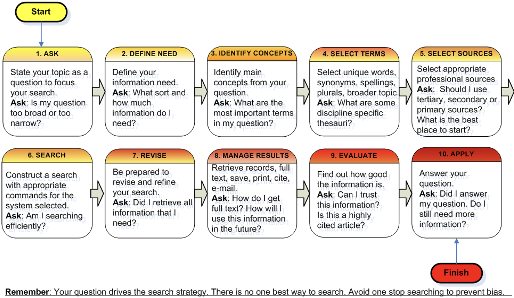
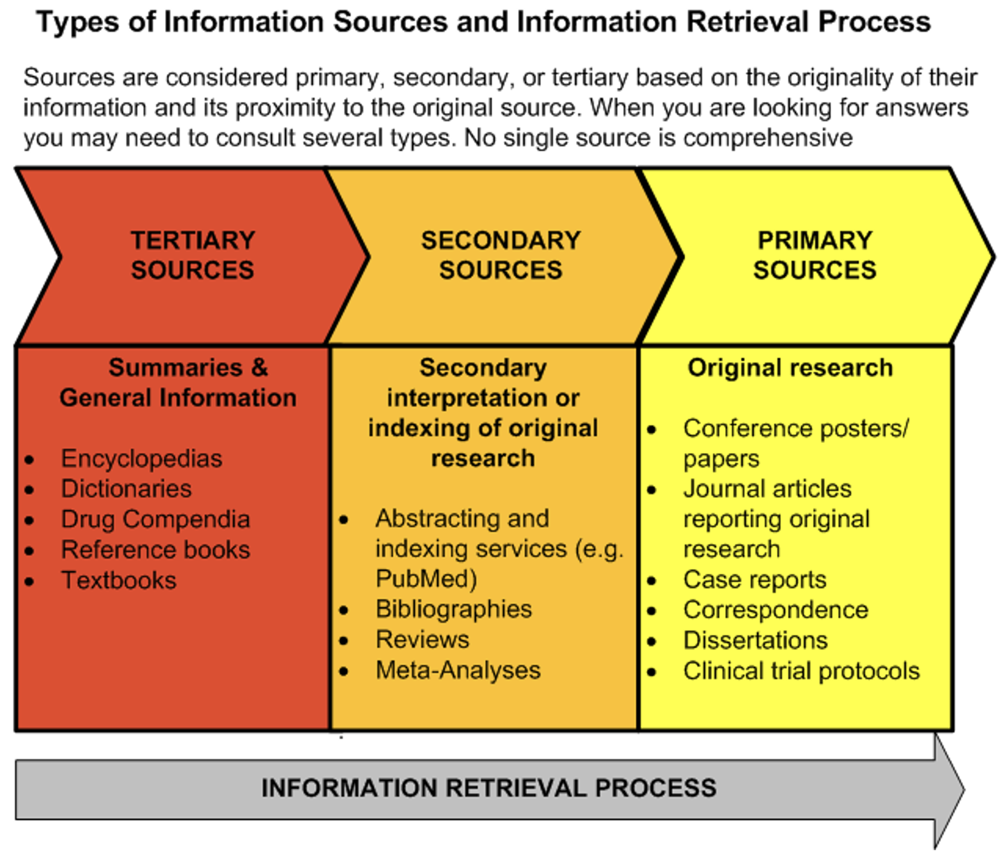
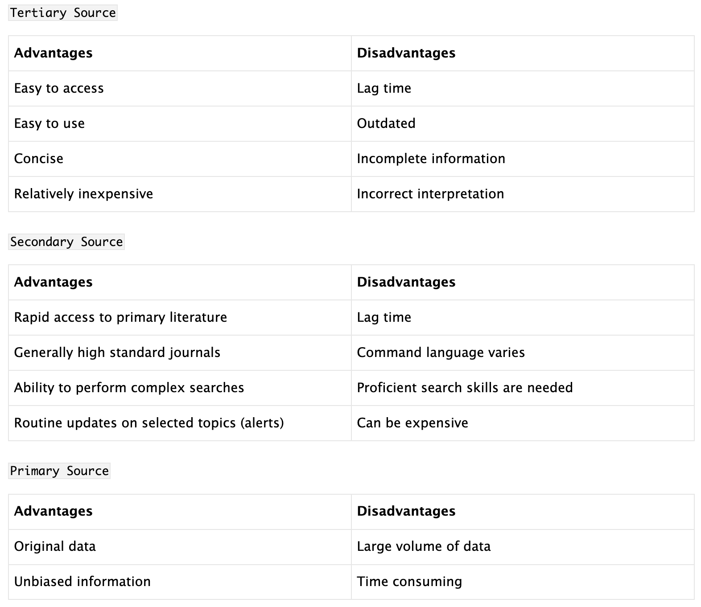
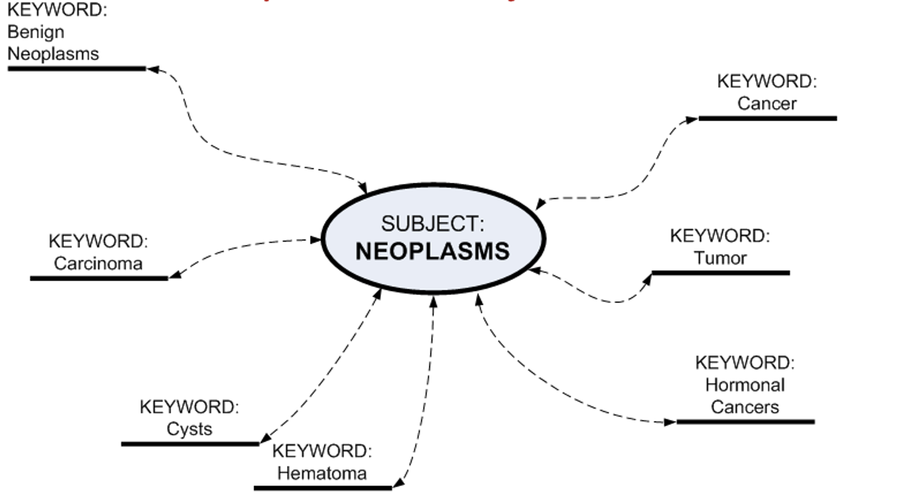
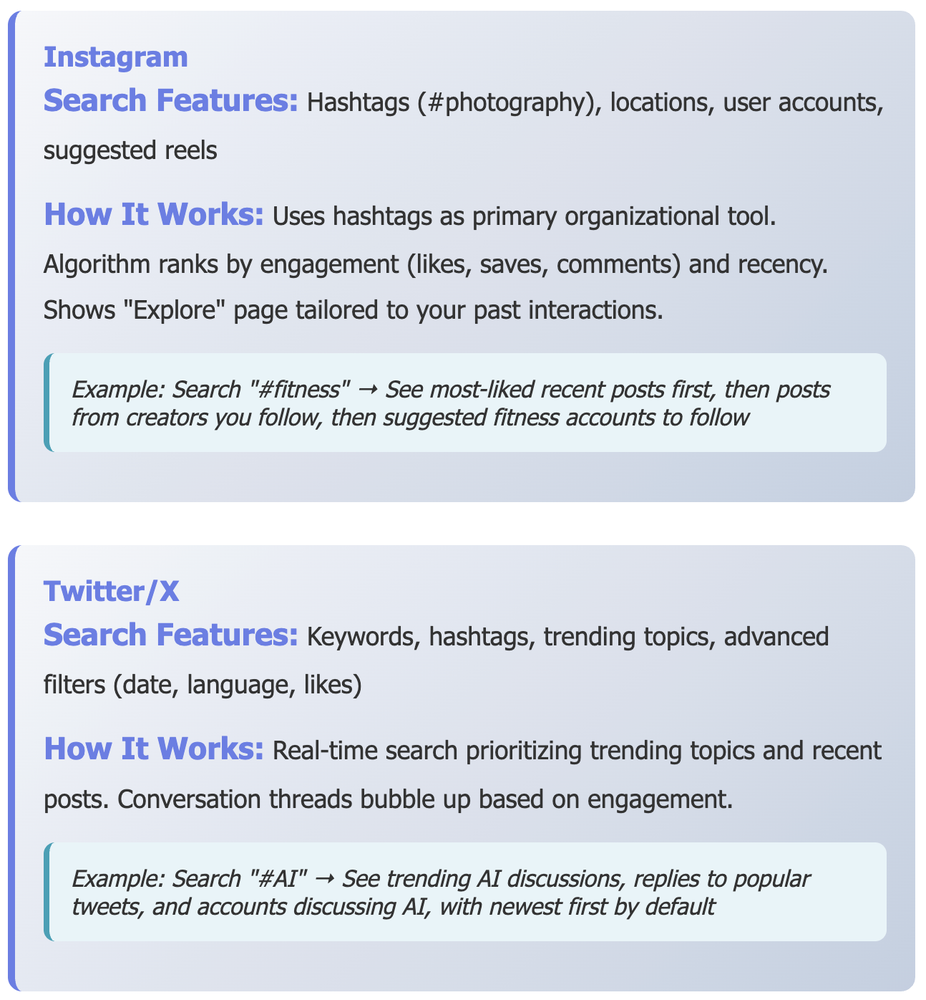
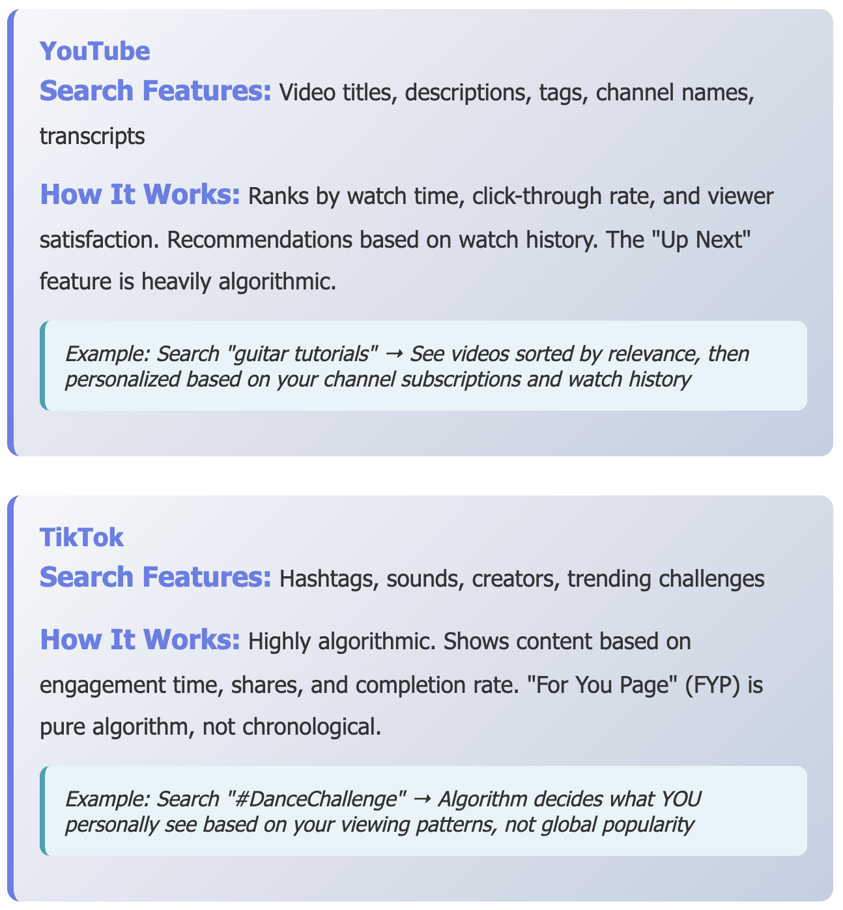

Search Techniques and Strategies
LIS 4/5523: Online Information Retrieval
Dr. Manika Lamba
Why Search Strategy is Important?
Before you Start Searching
Focusing your Question
- What am I looking for exactly? Question before you search!
- Test search to find out how much information is available
- If you are finding little information - broaden the question
- If you are finding lots of information - narrow the question
Define Your Need
- How much information do I need?
- What kind of information do I need?
Developing a Search Strategy
Example
- Ask: What
healthproblems are associated withwater pollution? - Main Concepts: health, water, pollution
- Select terms:
- Synonyms:
health, illness, disease, etc.water, rivers, lakes, sea, domestic water, etc.pollution, ‘oil spills’, chemical, biological, toxicity, etc - Plurals: river(s), lake(s), disease(s)
- Capitals: e.g. name of a specific lake, disease, region
Types of Searching
Semantic Search |
Keyword Search |
|---|---|
| Understands intent and context | Matches exact terms |
| Interprets meaning | Literal matching |
| Considers synonyms | No content analysis |
| Learns from patterns | Fast processing |
| Delivers relevant insights | Precise results |
How Semantic Search Works
Natural Language Processing (NLP): Understands language nuances and context
Machine Learning (ML): Enhances accuracy through pattern recognition and user feedback
Knowledge Graphs: Link related data entities for enriched insights
How Keyword Search Works
- Term Breaking: Breaks queries into individual words
- Exact Matching: Searches database for exact matches
- No Context Analysis: Does not analyze relationships between terms
Selecting a Source
Selecting a Source (Cont.)
Which Search Tools are Needed?
- Gateways
- node or network that serves as an entrance to another network
- organize information in a structured way in general or subject categories
- Examples: WHO A-Z health topics list (www.who.int/topics/en/), Essential Health Links (www.healthnet.org/essential-links/)
- Databases
- collection of information organized in such a way that a computer can quickly select desired pieces of data
- electronic filing system
- traditional databases are organized by fields, records and files
- Example: PubMed, ProQuest
- collection of information organized in such a way that a computer can quickly select desired pieces of data
- Search Engines
- program that searches documents for specified keywords and returns a list of documents where the keywords were found
- on the WWW, utilizes automated robotics to gather and index information
- Examples: Google, Internet Explorer
Google’s Search Operators
Special commands and characters that extend the capabilities of standard text searches
- Phrase Search (“…”) finds the exact phrase
- Example: “climate change”
- Site (:) searches for content on a specific domain
- Example: site:wikipedia.org “climate change”
- Filetype (:) limits results to specific file types
- Example: “early retirement” filetype:pdf
Database Searching
- Boolean Logic (AND, OR, NOT): Use operators like AND, OR, and NOT to define relationships between search terms
- Truncation/Wildcards (*): Finds variations of a word. Ex: therap*
- Alternate Spellings (?): Finds alternate spellings. Ex: behavio?r
- Phrase (“…”) or Proximity (…): Search for exact phrase. Ex: “information literacy”, prevention and (malaria parasite)
Keyword vs. Subject Search
| Keyword Search | Subject Search |
|---|---|
| Searches for exact words entered | Searches with pre-defined vocabulary |
| You can enter your own terms | You need to know the exact controlled term |
| Database looks for keywords anywhere | Database looks only in the subject field |
| Yields too many or too few results. Many irrelevant. | Yields more specific results most of which are relevant |
How Social Media Searching Works?
- Indexing: Platforms scan and catalog all posts, photos, and profiles
- Matching: Your search query is matched against the massive index
- Ranking: Results are ranked by relevance, popularity, and recency
- Personalization: Results are customized based on your history and behavior
- Delivery: Top results appear instantly on your screen
Platform Examples



Social Media Searching
Hashtags Search (#)
Keyword search
User/Account Search
Location Based Search
Trend/Topic Search
Advanced Filters
Sound/Music Search
Explore/Discover Pages
Mention/Reply Search
Saved/Bookmarked Search